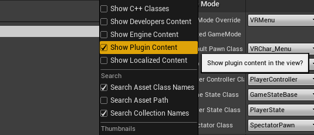

Are you trying to get VRWalkin' all setup and running with your Unreal Engine (UE) VR project? If so then you've come to the right place! Outlined below is the step-by-step installation process. In case you get stuck, feel free to reach out to the plugin author using the links at the bottom of the page.
Step 1. To begin, you first need to ensure that you've got the correct version of the plugin. You need to ensure that the plugin version matches your UE project version. To find the version that's right for you, head over to this page.
Step 2. Once you've found and downloaded the right version for you, go ahead an unzip that file before navigating to your project's folder.
In this folder, you may or may not already have a folder called 'Plugins'. In case you already do, then skip ahead to Step 4.
Step 3. If you don't have a 'Plugins' folder, simply go ahead and create an empty one just like the image below.
Step 4. Paste the unzipped VRWalkin plugin file into this Plugins folder. Then go ahead and boot up your project and you should see that it's all good to go!
Step 5. (Bonus) If you're unable to see this folder, you may need to enable the plugin via Edit > Plugins OR you may need to show plugin content via the Content Browser's view options.

Hopefully this tutorial and the VRWalkin Plugin are of some use to you. Good luck with your project!